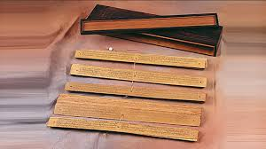

Teori Masuknya Agama dan Kebudayaan Hindu Budha di Indonesia
Indonesia adalah negara kepulauan yang letaknya strategis karena berada di jalur pelayaran yang menghubungkan negara-negara barat dan dan timur. Berlabuhnya kapal-kapal dagang berbagai bangsa membuat masyarakat Indonesia tidak dapat menghindar dari pengaruh luar. Hubungan dagang antara Indonesia dan India terjadi sejak tahun 1 M. Hubungan perdagangan ini diikuti pula oleh hubungan kebudayaan, seperti agama, sistem pemerintahan, sosial, dan budaya sehingga terjadi percampuran kebudayaan di antara dua bangsa tersebut Hubungan itu membuat bangsa Indonesia mengenal agama Hindu dan Buddha. Berikut beberapa teori (hipotesis) terkait proses masuknya agama dan kebudayaan Hindu dan Buddha ke Indonesia
1.Teori Waisya
Teori ini, dikemukakan oleh N. J. Krom, didasarkan pada alasan bahwa motivasi terbesar datangnya bangsa India ke Indonesia adalah untuk berdagang. Golongan terbesar yang datang ke Indonesia adalah para pedagang India (kasta waisya).ori waisya diragukan kebenarannya. Jika para pedagang yang berperan terhadap penyebaran kebudayaan, pusat-pusat kebudayaan mestinya hanya terdapat di wilayah perdagangan, seperti di pelabuhan atau di pusat kota yang ada di dekatnya. Kenyataannya, pengaruh kebudayaan Hindu ini banyak terdapat di wilayah pedalaman, dibuktikan dengan adanya kerajaan- kerajaan bercorak Hindu di pedalaman Pulau Jawa
2. Teori Ksatria
Menurut Teori Ksatria, yang dikemukakan F.D.K Bosch, pada masa lampau, di India, sering terjadi perang antar golongan. Para prajurit yang kalah atau jenuh menghadapi perang lantas meninggalkan India. Rupanya, di antara mereka, ada pula yang sampai ke wilayah Indonesia. Mereka inilah yang kemudian berusaha mendirikan koloni-koloni baru sebagai tempat tinggalnya. Di tempat itu pula, terjadi proses penyebaran agama dan budaya Hindu. Kelemahan teori ini adalah tidak adanya bukti tertulis bahwa pernah terjadi kolonisasi oleh para ksatria India.

3. Teori Brahmana
teori ini dikemukakan J.C. van Leur ini, para brahmana datang dari India ke Indonesia atas undangan pemimpin suku dalam rangka melegitimasi kekuasaan mereka sehingga setara dengan raja-raja di India. Teori ini didasarkan pada pengamatan terhadap sisa-sisa peninggalan kerajaan- kerajaan bercorak Hindu di Indonesia, terutama prasasti-prasasti berbahasa Sanskerta dan huruf Pallawa. Teori ini pun diragukan kebenarannya. Alasannya, kendati benar hanya para brahmana yang dapat membaca dan menguasai Weda, para pendeta Hindu itu pantang menyebrangi lautan.

4. Teori Arus Balik
teori ini dikemukakan oleh G. Coedes ini, berkembangnya pengaruh dan kebudayaan indonesia ini dilakukan oleh bangsa Indonesia sendiri. Bangsa Indonesia mempunyai kepentingan untuk datang dan berkunjung ke India, seperti mempelajari agama Hindu dan Budha. Sekembalinya dari India, mereka membawa pengetahuan tentang agama dan kebudayaan di India. Banyak orang lebih meyakini teori arus balik masih memerlukan banyak bukti lagi untuk memperkuat kebenarannya. Sementara itu, sekitar abad V, agama Buddha mulai dikenal di Indonesia. Pada akhir abad V, seorang biksu Buddha dari India mendarat di sebuah kerajaan di Pulau Jawa, tepatnya di Jawa Tengah sekarang. Pada akhir abad VII, I Tsing, peziarah Budha dari Tiongkok, berkunjung ke Pulau Sumatera, kala itu disebut Swarnabumi, tepatnya di Kerajaan Sriwijaya. la menemukan bahwa ajaran Buddha diterima luas oleh rakyat, dengan Sriwijaya sebagai pusat penting pembelajaran ajaran Buddha. Pada pertengahan abad VIII, Jawa Tengah berada di bawah kekuasaan raja-raja Dinasti Syailendra yang merupakan penganut Buddha. Mereka membangun berbagai monumen Buddha di Jawa, seperti Candi Borobudur, yang selesai dibangun awal abad IX.

BUKTI
Bukti-bukti Pengaruh Hindu dan Buddha dalam Masyarakat yang Masih Ada hingga Kini
Penyebaran agama dan kebudayaan Hindu dan Buddha berlangsung sangat lama, yaitu sejak abad I hingga abad XV, yang ditandai dengan berakhirnya Kerajaan Majapahit. Hal ini menjadikan pengaruh Hindu dan Buddha sangat kuat tertanam dalam kehidupan masyarakat Nusantara. Oleh karena itu, bukanlah merupakan sesuatu yang mengherankan jika masih banyak kita temukan peninggalan kebudayaan Hindu- Buddha di Nusantara. Peninggalan sejarah Hindu dan Budha di Nusantara tidak hanya terbatas pada tinggalan-tinggalan yang berwujud benda (fisik), tetapi juga nilai budaya (non fisik). Berikut peninggalan-peninggalan sejarah dari masa Hindu-Buddha :
1. Bahasa dan Tulisan
Masuknya bangsa India (kebudayaan Hindu) ke Nusantara sejak abad I Masehi mengantarkan masyarakat Nusantara ke budaya tulis atau masa aksara (masa ketika mereka mengenal dan mempraktekkan tradisi tulisan). Budaya tulis itu menggunakan bahasa Sanskerta dengan huruf Pallawa, yaitu sejenis tulisan yang ditemukan juga di wilayah India bagian selatan. Dalam perkembangannya, huruf Pallawa menjadi dasar dari huruf-huruf lain di Indonesia, seperti huruf Kawi, Jawa Kuno, Bali Kuno, Lampung, Batak, dan Bugis-Makassar. Adapun bahasa Sanskerta tidak berkembang sepesat huruf Pallawa. Penyebabnya adalah bahasa Sanskerta digunakan hanya di lingkungan terbatas, yaitu di lingkungan istana dan oleh para brahmana dalam upacara keagamaan.Bukti pertama dikenalnya tulisan (aksara) di Nusantara adalah penemuan tulisan di atas tujuh buah yupa abad IV di wilayah Kutai, Kalimantan Timur. Jejak sejarah berupa tulisan itu dapat dilihat melalui berbagai prasasti, kitab, dan manuskrip (naskah) :
a.Prasasti
Prasasti, dari kata bahasa Sanskerta yang berarti pujian, merupakan piagam atau dokumen yang ditulis pada bahan yang keras dan tahan lama, yang memuat informasi tentang sejarah peringatan, atau catatan tentang sebuah peristiwa. Di antara berbagai sumber sejarah kuno Indonesia, seperti naskah dan berita asing, prasasti dianggap sumber terpenting karena mampu memberikan penjelasan secara kronologis suatu peristiwa. Ada banyak hal yang membuat suatu prasasti sangat menguntungkan dunia penelitian masa lampau. Selain mengandung unsur penanggalan, prasasti mengungkap sejumlah nama dan alasan prasasti tersebut dikeluarkan. Hampir semua prasasti pada masa kerajaan Hindu, juga penggubahan karya sastra sejak zaman Kerajaan Kediri, menggunakan huruf Pallawa.Tulisan-tulisan pada prasasti biasanya mengikuti format tertentu, seperti berisi tanggal, tahun, dan nama pejabat yang memerintahkan pembuatan prasasti tersebut.
Dalam perkembangannya, pengenalan bahasa dan tulisan memungkinkan pujangga Nusantara melahirkan karya-karya sastra berupa kitab. Kitab adalah kumpulan kisah, catatan, atau laporan tentang suatu peristiwa, kadang di dalamnya terdapat juga mitos. Pada masa Hindu-Buddha, biasanya kitab ditulis di atas daun lontar. Tulisan di dalamnya umumnya bukan merupakan kalimat langsung, melainkan ditulis dalam rangkaian puisi yang indah dan terbagi ke dalam sejumlah bait yang disebut pupuh. Adapun ungkapan yang ditulis dalam bentuk puisi ini biasa disebut kakawin.
Kitab dapat dikategorikan sebagai karya sastra kuno yang dalam perkembangannya di Indonesia terdiri dari beberapa tahap sebagai berikut :
1.Tahap pertama atau kesusastraan tertua, lahir pada masa Kerajaan Mataram Kuno, Kitab terkenalnya adalah Sang Hyang Kamahayanikan oleh Sambara Suryawanasa. Kitab ini menjelaskan tentang ajaran Buddha aliran Tantrayana.
2.Tahap kedua, lahir pada masa Kerajaan Kediri. Pada tahap ini lahir karya sastra besar Arjunawiwaha yang ditulis oleh Mpu Kanwa, Kresnayana yang ditulis oleh Mpu Dharmajaya, dan Bharatayuda yang ditulis oleh Mpu Sedah dan kemudian diselesaikan oleh Mpu Panuluh. Kerajaan Kediri tercatat sebagai kerajaan yang memiliki hasil sastra kuno yang cukup banyak, terutama pada saat pemerintahan Raja Jayabaya.
3.Tahap ketiga, yaitu kesusasteraan yang lahir pada zaman Majapahit. Pada tahap ini lahir kitab Nagarakertagama. ditulis oleh Mpu Prapanca pada tahun 1365. Dari kitab inilah kita banyak mengetahui tentang kehidupan masyarakat pada zaman Majapahit dan silsilah dari para leluhur raja. Kitab ini juga menjadi salah satu sumber penulisan sejarah politik Jawa dari abad VIII sampai abad XV. Selain Negarakertagama, terdapat juga kitab Sutasoma yang ditulis oleh Mpu Tantular dan kitab Pararaton, yang berisi mitos tokoh Ken Arok (pendiri Singasari), dan kitab Bubhuksah kitab yang berkisah tentang dua orang bersaudara yang berusaha mencari kesempurnaan.
c.Manuskrip
Manuskrip adalah naskah tulisan tangan peninggalan masa lalu yang berisi berbagai hal, seperti cerita kepahlawanan, hukum, upacara keagamaan,dan masih banyak lagi. Contohnya pustaha, yaitu naskah Batak yang ditulis dengan aksara Batak dan ditulis diatas lembaran kulit kayu alim. La Galigo, yaitu sebuah naskah kuno dari Sulawesi Selatan yang merupakan naskah epos (kepahlawanan) yang berisi kisah tentang Kerajaan Luwu masa pra-Islam. Pada awalnya, I La Galigo ditulis menggunakan aksara Bugis, namun dalam perkembangannya ditulis dalam berbagai bahasa. Sejarawan Robert Wilson menganggap I La Galigo sebagai hasil sastra kuno terbaik karena ditulis dengan mengedepankan objektivitas dan fakta sejarah. Selain kedua naskah itu, ada naskah kuno Lampung yang ditulis di atas kulit kayu pohon bunut, menggunakan aksara Lampung. Aksara tersebut adalah bentuk tulisan yang memiliki hubungan dengan aksara Pallawa dari India selatan, yang diperkirakan masuk ke Pulau Sumatra pada masa kejayaan Kerajaan Sriwijaya.
2.Politik dan Sistem Pemerintahan
Sebelum masuknya pengaruh Hindu-Buddha ke Indonesia,sistem pemerintahan yang dianut di Indonesia adalah sistem pemerintahan desa, yang dipimpin seorang kepala suku dan dipilih berdasarkan kekuatan dan kelebihannya. Salah satu pengaruh Hindu di bidang politik muncul konsep dewa-raja.Sistem pemerintahan kerajaan pada masa kerajaan Hindu dan Buddha pada umumnya terbagi dalam beberapa bidang, yaitu bidang pertahanan atau angkatan perang, perdagangan, keuangan, urusan luar negeri, pajak, dan hukum. Jabatan-jabatan ini dapat dirangkap hanya oleh beberapa orang, bergantung keinginan raja dan luasnya kerajaan. Raja adalah pemimpin tertinggi.Terdapat perbedaan sistem pemerintahan antara kerajaan Hindu-Buddha yang berlokasi di Jawa Timur, Jawa Tengah bagian utara, dan Jawa Tengah bagian selatan. Hal ini dapat diidentifikasi dengan melihat denah bangunan candi di dalam sebuah kompleks. Pemerintahannya bersifat feodal. Terlihat dari denah bangunan candi-candi induk ditempatkan di bagian tengah dan dikelilingi candi-candi perwara. Hal ini menunjukkan pusat pemerintahan sepenuhnya berada di tangan raja. Sementara itu, bangunan candi-candi di Jawa Tengah bagian utara mencerminkan sistem pemerintahan federal pemerintah pusat memerintah kerajaan-kerajaan kecil yang sederajat secara demokratis Hal ini tercermin dari lokasi-lokasi dalam denah bangunan candi yang menyebar dalam kompleks percandian.
3.Ekonomi dan Sistem Mata Pencarian Hidup
M. Dj. Poesponegoro dan Nugroho Notosusanto mencatat pada zaman prasejarah penduduk Indonesia adalah pelayar- pelayar yang sanggup mengarungi lautan lepas. Lautan bukan penghalang, melainkan penghubung.Menurut hasil penelitian F. Heger, adanya benda-benda peninggalan bersejarah, seperti nekara, di berbagai tempat di Indonesia menunjukkan adanya hubungan äntara kepulauan di Nusantara dengan berbagai daerah di Asia Tenggara. Kedatangan India memperkuat tradisi agraris, misalnya dengan mengenalkan teknologi irigasi serta semakin meramaikan aktivitas perdagangan dan pelayaran. Hal ini dibuktikan dengan semakin berkembangnya kota-kota pelabuhan sebagaimana ditunjukkan Kerajaan Pajajaran (Pelabuhan Sunda Kalapa), Sriwijaya, dan Majapahit.
4.Agama dan Sosial Budaya Sebelum pengaruh Hindu-Buddha masuk bangsa Indone
Telah mengenal sistem kepercayaan animisme dan dinamisme telah sejumlah kegiatan upacara yang terkait pemujaan terhadap roh nenek moyang. Masuknya pengaruh Hindu membuat masyarakat Indonesia mengenal dewa-dewi. Setiap dewa-dew memiliki tempat dan perannya yang khas. Dalam kehidupan sosial, pengaruh kebudayaan Hindu yang nyata adalah dikenalnya sistem pelapisan sosial di dalam masyarakat yang disebut sistem kasta. Meski demikian, sistem kasta yang berlaku di indonesia tidak seketat di negeri asalnya, India Agama Buddha tidak mengenal kasta. Hasil budaya dua kebudayaan ini sampai sekarang masih dapat kita jumpai dalam bentuk bangunan-bangunan candi, seperti di Sumatra, Jawa, Kalimantan, dan Bali. Ada candi yang bercorak agama Hindu dan ada pula candi yang bercorak agama Buddha.
5.Seni Bangun, Seni Pahat, dan Relief Candi
Ada candi-candi bercorak Buddha berfungsi sebagai sarana ritual (memuliakan Buddha), menyimpan relikui Buddhis ataupun biksu terkemuka atau keluarga kerajaan penganut Buddha (seperti abu jenazah), atau sebagai tempat ziarah bagi para penganutnya. Contohnya Borobudur, Sewu, Sari dll.Sementara itu, bangunan candi pada umumnya terdiri atas tiga bagian utama, yaitu:
-Bhurloka, yaitu bagian bawah candi yang melambangkan kehidupan dunia fana.
-Bhurvaloka, adalah bagian candi yang melambangkan tahab pembersihan dan pemurnian jiwa
-Svarloka, yang melambangkan tempat para dewa atau jiwa yang telah disucikan.


Dengan adanya akulturasi, keterampilan-keterampilan yang telah ada ini mengalami peningkatan dan mengalami kemajuan pesat ketika masyarakat praaksara sudah mulai mengenal tulisan. Proses tersebut tampak pada hal-hal berikut:
1. Aksara dan Bahasa
Budaya tulis ini menggunakan bahasa Sanskerta dan huruf Pallawa. Dikenalnya aksara oleh penduduk Nusantara merupakan hasil proses asimilasi. Sebelum pengaruh Hindu masuk ke Indonesia, bangsa Indonesia belum mengenal aksara atau tulisan. Orang-orang India yang masuk ke Indonesia membawa budaya tulis, dengan huruf Pallawa dan bahasa Sanskerta. Dengan mengenal tulisan, bangsa Indonesia memasuki zaman aksara atau zaman sejarah. Selanjutnya, huruf Pallawa dan bahasa Sanskerta menjadi huruf dan bahasa utama dalam banyak prasasti di Indonesia; yang paling tua adalah Prasasti Kutai atau Prasasti Mulawarman di Kalimatan Timur. Prasasti-prasasti lain yang menggunakan huruf dan bahasa yang sama ditemukan dari masa Kerajaan Tarumanagara, Sriwijaya, dan Mataram Kuno.
2.Sistem Kepercayaan
Sejak zaman prasejarah, bangsa Indonesia telah memiliki kepercayaan berupa pemujaan terhadap roh nenek moyang. yang disebut, dan juga kepercayaan terhadap adanya kekuatan pada benda-benda tertentu, yang disebut Sebagai contoh, dalam upacara keagamaan atau pemujaan terhadap para dewa-dewi di candi, terlihat adanya unsur pemujaan terhadap roh nenek moyang.Hal tersebut berarti candi dianggap sebagai makam atau tempat berdiamnya roh raja yang telah meninggal. Hal ini memiliki kemiripan dengan fungsi bangunan menhir, dolmen, dan punden berundak-undak pada zaman Megalitikum. Selain itu, biasanya di atas terdapat arca dewa yang merupakan perwujudan raja yang didharmakan di dalam candi.Pada puncak candi terdapat lambang para dewa, biasanya berupa gambar teratai pada batu persegi empat. Singkatnya, upacara keagamaan atau pemujaan terhadap dewa yang ada di candi pada hakikatnya juga merupakan pemujaan terhadap roh nenek moyang, dan di situlah letak akulturasi antara sistem kepercayaan masa praaksara dan kebudayaan Hindu-Buddha.
3.Kesusastraan
arya sastra terkenal berbentuk epos yang berasal dari India, seperti kitab Ramayana dan Mahabharata, telah memicu para pujangga Nusantara untuk menghasilkan karya-karya sastra baru. Pembuatan kitab pertama kali dirintis pada masa Dinasti Isyana, yaitu pada masa pemerintahan Dharmawangsa Teguh. la memelopori penggubahan epik Mahabharata ke dalam bahasa Kawi (Jawa Kuno). Sesuai tahapan perkembangannya, naskah-naskah kuno ini mulai ditulis sejak zaman Kerajaan Mataram Kuno, kemudian pada zaman Kerajaan Kediri, dan berakhir pada zaman Majapahit. Pada zaman Majapahit, tembang tidak lagi menggunakan bahasa Sanskerta, tetapi bahasa Kawi atau bahasa Jawa Kuno, yang disebut kakawin dan kidung.
4.Sistem Pemerintahan
Dalam sistem pemerintahan, kebudayaan Hindu-Buddha mengenalkan sistem kerajaan dengan konsep dewa raja. Konsep ini memosisikan raja sebagai titisan para dewa. Para ahli menganggap konsep dewa raja sebagai hasil proses akulturasi, vaitu perpaduan antara ajaran Hindu dan pemujaan nenek moyang yang sudah lama dianut penduduk Nusantara. Dalam bahasa Sanskerta, istilah dewa raja dapat bermakna Saja para dewa" atau "raja yang juga titisan dewa". Dalam masyarakat Hindu, jabatan dewa tertinggi biasanya disandang oleh Siwa, terkadang Wisnu, atau Brahma. Konsep ini memandang raja memiliki sifat ilahiah, yaitu sebagai dewa yang Ndup di atas bumi atau sebagai titisan dewa tertinggi.
5.Kesenian
Dalam hal kesenian, terjadi juga proses akulturasi. Sebelum masuknya pengaruh Hindu-Buddha, bangsa Indonesia telah mengenal seni bangunan dalam bentuk bangunan-bangunan besar dari masa Megalitikum, yaitu bangunan yang terkait erat dengan kegiatan pemujaan dan penghormatan kepada nenek moyang.Contohnya dolmen, punden berundak-undak, dan menhir.Masyarakat yang beragama Buddha juga mendirikan bangunan candi dengan fungsi yang mirip. Stupa pada candi candi bercorak Buddha awalnya berfungsi seperti pripih. Selain itu, sebagai tempat menyimpan abu jenazah Buddha Gautama atau barang-barang berharga milik raja yang telah meninggal.
6.Sistem Bangunan Tata Kota
Pada zaman sebelum Hindu-Buddha, masyarakat Indonesia belum mengenal bangunan dan tata kota yang kompleks, tertata, dan bernilai seni tinggi. Singkatnya, belum mengenal arsitektur. Sejak masa Hindu-Buddha, kita mengenal sistem bangunan yang lebih kompleks, tertata rapi, dan bernilai seni tinggi dibandingkan sebelumnya. Bangunan itu adalah keraton. Tempat tinggal raja ini biasanya terletak di pusat kota dan dikelilingi tembok yang tinggi.Tata letak bangunan yang lazim disebut sistem macapat. Sistem ini masih banyak kita jumpai di kota-kota lain di Jawa sebagaimana telah disebut di atas.
7.Bidang Seni Rupa
Relief adalah seni pahat berupa ukiran (seni ukir) yang biasanya dibuat pada dinding candi, kuil, monumen, atau tempat bersejarah. Relief- relief ini tersusun sedemikian rupa sehingga menjadi rangkaian cerita, biasanya diambil dari sejumlah karya sastra yang lahir pada masa itu.Seni rupa lainnya adalah dalam bentuk patung atau arca.Pada masa praaksara (sebelum masa Hindu- Buddha), bangsa Indonesia sudah mengenal ragam hias, seperti terlihat pada nekara, gerabah, serta alat upacara berupa kapak perunggu dan candrasa. Kemampuan membuat ragam hias semakin berkembang pada masa Hindu. Berbagai bentuk dapat ditemui, seperti geometris garis sejajar, bentuk 5 atau pilin berganda, gigi belalang, meander, ataupun swastika.Ragam hias tubuh manusia yang pada masa praaksara dikenal dengan rotem.
8.Sistem Kalender
Sistem penanggalan atau kalender Hindu-Buddha turut berpengaruh terhadap kebudayaan Indonesia, yaitu digunakannya kalender dari India bernama kalender Saka. Tahun Saka dimulai tahun 78 M. Penggunaan kalender Saka ditemukan dalam Prasasti Talang Tuo. Prasasti berhuruf Pallawa dan berbahasa Melayu Kuno tersebut menjelaskan tentang keberadaan Kerajaan Sriwijaya di Sumatra, berangka tahun 606 Saka atau 686 Μ. Perhitungan tahun Saka sampai saat ini masih digunakan oleh masyarakat Bali yang beragama Hindu. Perhitungan ini digunakan untuk menentukan hari dari sejumlah kegiatan upacara keagamaan yang mereka anut.